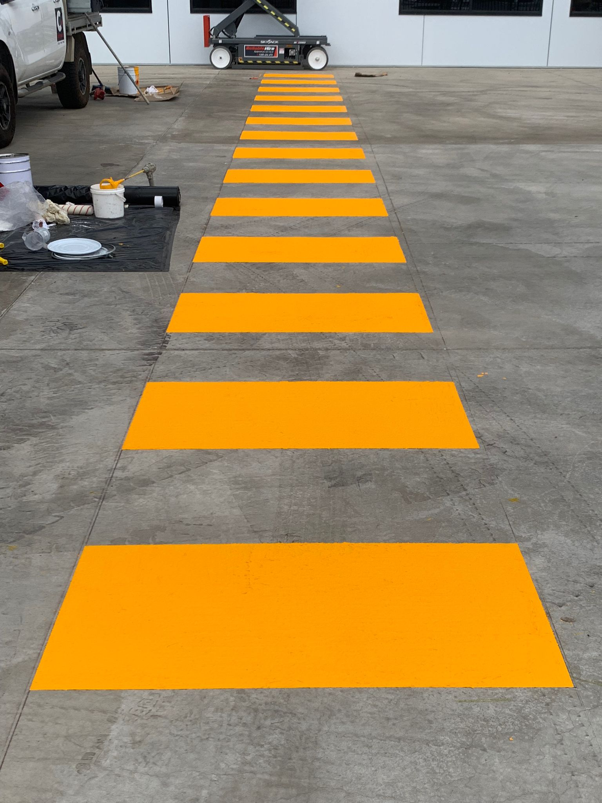

Enhanced workflow efficiency
Well-planned line markings create a more organised workspace and help movement flow smoothly.
Warehouse line marking · Australia
Site-specific floor line marking for warehouses, factories, workshops and logistics facilities. Create clearer pedestrian routes, traffic lanes, loading areas and work zones that support safer, better-organised operations.

Benefits
Well-planned line markings do more than guide. They help a workspace operate safely, efficiently and consistently.
Well-planned line markings create a more organised workspace and help movement flow smoothly.
Clearly defined areas and pathways reduce ambiguity and help lower the risk of accidents and injuries.
Layouts are tailored to the space, operational objectives and visual identity of each site.
Long-lasting materials sustain visibility and reduce the need for frequent reapplication.
Line marking solutions
Every layout is marked with one of five systems. Tape and projected marking are our first recommendation for most indoor industrial floors; paint, epoxy and cold applied plastic cover the rest.
Recommended
Heavy-duty floor tape for indoor industrial floors. Clear, durable and easy to change as the layout evolves.

Recommended
Bright lines, crossings and warning signs projected onto the floor. No floor contact, so there is nothing for traffic to wear away.

Also available
A familiar painted finish for general-purpose lines, walkways and bay outlines.

Also available
Higher-durability epoxy markings for hard-working internal floors and busy traffic routes.

Also available
A two-part resin laid far thicker than paint, curing into a hard-wearing layer bonded to the concrete.

Applications
Cotewell plans, supplies and installs floor line markings around the traffic, safety controls and operating conditions of each facility.
Organise pedestrian walkways, forklift lanes, pallet bays, storage zones, crossings and exclusion areas across active warehouse floors. Layouts are planned around racking, picking routes, loading points and day-to-day material movement.
Define machine footprints, production cells, safe access routes, work-in-progress areas and hazard boundaries in manufacturing environments. The marking system is selected for the floor, traffic, cleaning regime and operational wear.
Create visible vehicle bays, tool and equipment locations, pedestrian routes and working clearances around machinery. Durable, precise markings help busy workshops keep movement and storage areas easy to understand.
Guide vehicles, forklifts and people through loading docks, dispatch areas, turning zones, marshalling spaces and high-traffic intersections.
 Specify by traffic, floor and change frequency
Specify by traffic, floor and change frequency
Line marking options
There is no one-size-fits-all system, but for most indoor industrial floors we lead with tape or projected marking. Paint, epoxy and cold applied plastic are matched to the floor, traffic and cleaning regime where those two will not suit.

Case study
The facility improved workplace safety and traffic management with durable Mighty Line floor marking tape, designed to withstand heavy forklift traffic and demanding industrial conditions. The removable tape provided clear, long-lasting line marking that continued to perform for more than five years.
Line marking FAQs
Practical answers for facilities, operations and safety teams.
Explore the learning centreCost depends on the area, layout complexity, surface preparation, marking material, number of colours and symbols, site access and whether installation must happen after hours. Cotewell can assess the site and provide a project-specific quote.
Longevity depends on the floor condition, traffic volume, vehicle turning, cleaning methods, chemical exposure and the selected system. Tape, paint, two-pack epoxy, cold applied plastic and projected marking each suit different wear profiles.
Downtime varies with preparation, layout size and the cure or application requirements of the selected material. Work can often be staged by zone or scheduled around shifts. Tape and projected marking may suit sites where access windows are especially limited.
Useful inputs include a site plan, pedestrian and vehicle routes, loading points, storage areas, machinery footprints, exclusion zones, floor condition, cleaning regime and future layout changes. An on-site assessment can confirm measurements and operational constraints.
Clear markings can support a site's traffic management, risk controls and safety communication. The final layout should reflect the site's risk assessment, operational rules, workplace health and safety duties and any applicable Australian Standards or client specifications.
Start with the site
Talk to Cotewell about a line marking solution tailored to your workspace and operational objectives.